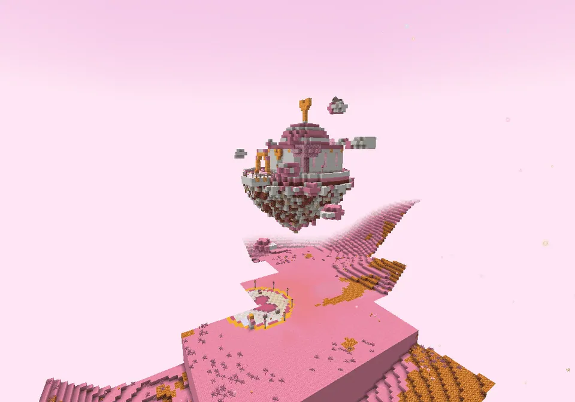
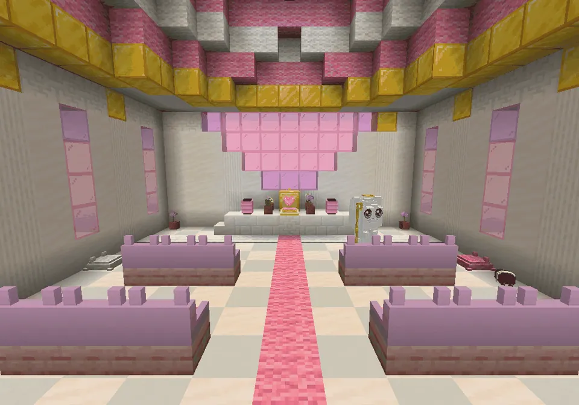

Een klein wolkentempeltje op een zwevend eilandje, met het Knuffelhart
A chapel on the cloudsEen kapelletje op de wolken
Somewhere above the guh land (a bit rarer than the other buildings) you find a round cloud plaza with a big pink pixel heart. Take one of its two wolkenliften 40 blocks up to a floating islet: a lawn with guh flowers and blossom trees, hanging guh crystals underneath, and a little white chapel with gold trims, pink windows, a heart window and a pink-and-white cloud dome. Soft music plays inside. On the altar, under a glass dome, glows het Knuffelhart, a pink heart you can't craft, mine or move: it only exists here. Next to it stands de wolkenhoeder, a cloud guh with a golden crook and a tiny halo. There's also a hemelkist in the garden.
Ergens boven het guhland (iets zeldzamer dan de andere gebouwen) vind je een rond wolkenplein met een groot roze pixelhart. Neem een van zijn twee wolkenliften 40 blokken omhoog naar een zwevend eilandje: een grasveldje met guhbloemen en bloesembomen, hangende guhkristallen eronder, en een wit kapelletje met gouden randjes, roze ramen, een hartjesraam en een roze-witte wolkenkoepel. Binnen speelt zachte muziek. Op het altaar, onder een glazen koepel, gloeit het Knuffelhart, een roze hart dat je niet kunt craften, minen of verplaatsen: het bestaat alleen hier. Ernaast staat de wolkenhoeder, een wolkenguh met een gouden herdersstaf en een piepklein aureooltje. In de tuin staat ook een hemelkist.
Het Hemelkapelletje en het Knuffelhart

The floating isletHet zwevende eilandje

InsideBinnen
A pink aisle, benches and hanging lampions.Een roze loper, bankjes en hangende lampionnen.
LootBuit
| ItemVoorwerp | CountAantal | ChanceKans |
|---|---|---|
| 2–4 | oftenvaak | |
| 1 | oftenvaak | |
| 1 | oftenvaak | |
| 6–14 | oftenvaak | |
| 2–6 | oftenvaak | |
| Roze tulp | 1–3 | oftenvaak |
| 1–2 | sometimessoms |